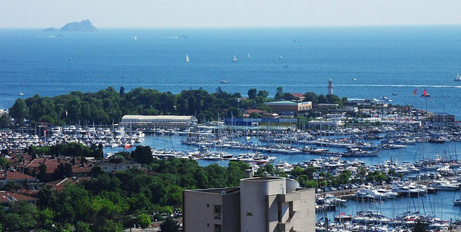
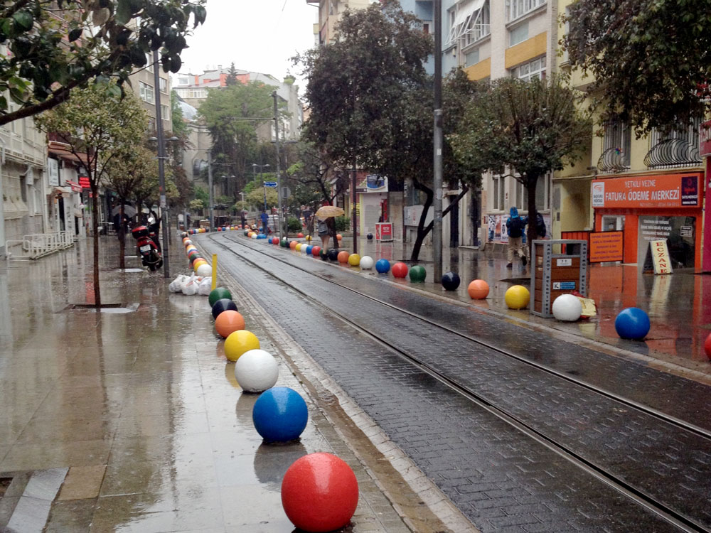
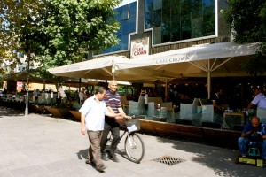
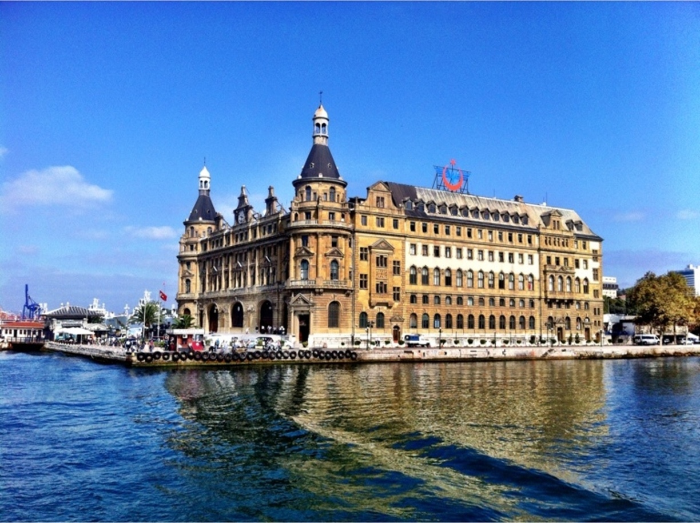

Places Worth to Visit in Asian Side
Yes, it is. But only if you’re in Istanbul for 4 days or more, or visiting this gorgeous Turkish metropolitan for the second time. Let’s not beat around the bush, with the huge concentration of (historical) sightseeing spots on the European side of Istanbul, the Asian shore is playing second fiddle to its European counterpart. 
If you already have this ‘been there, done that’ feeling, then the Asian part offers a view of Istanbul and its inhabitants not found in Sultanahmet or Taksim. The best way to start exploring the Asian side of Istanbul is by taking a ferry to Kadıköy. Here are my favorite spots worth paying a visit in the different Istanbul!
Kadıköy Tuesday Market
If you happen to be in town on a Tuesday or Friday, the famous Tuesday market is a remarkable spot for an adventure in the local market. Starting from 1969 the market place in Kadıköy was the sanctuary of the local shoppers. Naturally it grew with the city and the population. Finally in 2008 it moved from its traditional place in Altıyol to a modern forty thousand square meters area, with four thousand stalls and a car park in Fikirtepe.
 Some of the locals still miss the historic market despite the (traffic) chaos it created. They say the new one does not have the same ambience. Yet some are really happy with the spacious new spot.
Some of the locals still miss the historic market despite the (traffic) chaos it created. They say the new one does not have the same ambience. Yet some are really happy with the spacious new spot.
You can simply take a taxi to the market place which is about 3 km away from the ferry dock. Alternatively you can take a bus from Kadıköy, 8A and get off at Mandıra Caddesi or Ş.Er Bülent Altınsoy station. You can walk too, but keep in mind that it is uphill most of the time.
Kadıköy Daily Market
 If you can’t make it on a Tuesday, you can always visit the daily Kadıköy market. It’s a different experience, but not less enjoyable — and much closer to the pier. Cross the main street after leaving the ferry dock and make a right and then turn left. If you find yourself in car-free streets filled with shops, you’re there. It is a really laid-back place to walk or shop around in. There are also plenty of nice pastry shops, bookstores and cafés (with terraces) to recharge your batteries.
If you can’t make it on a Tuesday, you can always visit the daily Kadıköy market. It’s a different experience, but not less enjoyable — and much closer to the pier. Cross the main street after leaving the ferry dock and make a right and then turn left. If you find yourself in car-free streets filled with shops, you’re there. It is a really laid-back place to walk or shop around in. There are also plenty of nice pastry shops, bookstores and cafés (with terraces) to recharge your batteries.
Moda
 I seem to have a love-hate relationship with this part of the Asian side. Unlike other people, I don’t think it’s that spectacular, but when on the Asian side (and after visiting the market) I can’t seem to skip having a tea or coffee in Moda while overlooking the Sea of Marmara. You can walk all the way to Moda, but taking the nostalgic tram is more convenient — get off at the Moda stop.
The place I always go to is a café/restaurant at the Moda pier (Moda İskele). You can tell that the venue has had more glorious times in the past, but it remains a cool place to relax and enjoy the sea view.
Fenerbahçe and Kalamış Marinas

Behind Moda, and still in the south west of Kadıköy, you’ll find the adjacent Fenerbahçe and Kalamış Marinas. With a combined capacity of 1120 boats, it is the biggest marina of Turkey. To pay them a visit you can walk parallel with the sea from Moda all the way until you reach the Fenerbahçe S.K. football stadium. Alternatively you can take a taxi or dolmuş that leave from Kadıköy to Bostancı. In that case, get off 250 meters past Fenerbahçe football stadium. Either way, on the right hand side take Kökdere Street which connects to Minur Nurettin Selçuk Street approximately 100 meters further. After you pass Kalamış Park on your right, you will reach the marinas.
When you keep on walking in the same direction you will not be able to see the sea for a while, but there is no need to worry. After you pass the historical Kalamış Kiosk on your right, you will connect to Fener Kalamış Street. Stay on that street and keep on walking until you arrive in Fenerbahçe Parkı. This park has plenty of nice cafes in a green environment overlooking the Sea of Marmara.
Bağdat Caddesi
 If you take a yellow minibus from Kadıköy to Bostancı (alt Bostancı for the seaside route) you can observe the most noteworthy part of the southeast coastal districts of Kadıköy. The road you take runs parallel with the sea. When you reach Bostancı, look for the famous Bağdat Caddesi and start your walk back to Kadıköy.
Today the area surrounding Bağdat Avanue is an upper-class residential area. The avenue itself is well-known for its posh shops with world famous and local brands, shopping malls, department stores, both local and international cuisine restaurants, cafes and pubs. The atmosphere is great and almost all the stores are open every day of the week — including Sunday afternoon. This one-way avenue runs 6 km from Bostancı to Kızıltoprak, almost parallel with the coastline of the Sea of Marmara. In case you get tired (of shopping), just hop on a dolmuş passing by back to Kadıköy.
Haydarpaşa
 If you take the ferry to Kadıköy, then it’s hard not to notice the Port of Haydarpaşa and the Haydarpaşa Railway Station. The first is one of the main container terminals of Turkey, while the second is a Neo-Renaissance style building built in 1908 as the Istanbul-Baghdad and Istanbul-Damascus-Medina railway terminal.
Üsküdar
 Üsküdar was a Greek colony in the 7th century B.C., known for its pier and Byzantine Chalcedon shipyards. Today it consists of no less than 52 districts. During the Ottoman Empire Üsküdar was a very popular Turkish settlement area. Proof of which the huge amount of mosques, fountains, waterside mansions and palaces in the area. Among the most famous ones are Beylerbeyi Palace, Beylerbeyi Mosque, Yeni Valide Mosque, Ostrorog House, Edib Efendi Mansion, Hidiv Kiosk and the Ahmet III Fountain on Üsküdar Square. You can take a taxi to Üsküdar from Kadıköy or you can hop on a ferry from Eminönü or Beşiktaş and reach Üsküdar Square in 20 minutes.
Üsküdar was a Greek colony in the 7th century B.C., known for its pier and Byzantine Chalcedon shipyards. Today it consists of no less than 52 districts. During the Ottoman Empire Üsküdar was a very popular Turkish settlement area. Proof of which the huge amount of mosques, fountains, waterside mansions and palaces in the area. Among the most famous ones are Beylerbeyi Palace, Beylerbeyi Mosque, Yeni Valide Mosque, Ostrorog House, Edib Efendi Mansion, Hidiv Kiosk and the Ahmet III Fountain on Üsküdar Square. You can take a taxi to Üsküdar from Kadıköy or you can hop on a ferry from Eminönü or Beşiktaş and reach Üsküdar Square in 20 minutes.